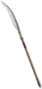

Grim's Burning Dead
Grim Scythe
Damage: 30-70 (two-handed)
Required Level: 75
Adds 150-300 Fire Damage
+25-35% to Fire Skill Damage
+200-300% Enhanced Weapon Damage
+5 to Fire Golem (class only)
Requirements Increased By -50%
+3 to Necromancer Skill Levels
-50% Target Defense
+5 to Golem Mastery (class only)
+200-250 to Attack Rating
+45% Fire Resistance
Attacker Takes Damage of 8
Unique Polearm
Grim's Burning Dead
- Type
- Polearm
- Base
- Grim Scythe
- Tier
- Exceptional
- Required level
- 75
- Item level
- 70
- Required strength
- 140
- Required dexterity
- 140
- Max sockets
- 6